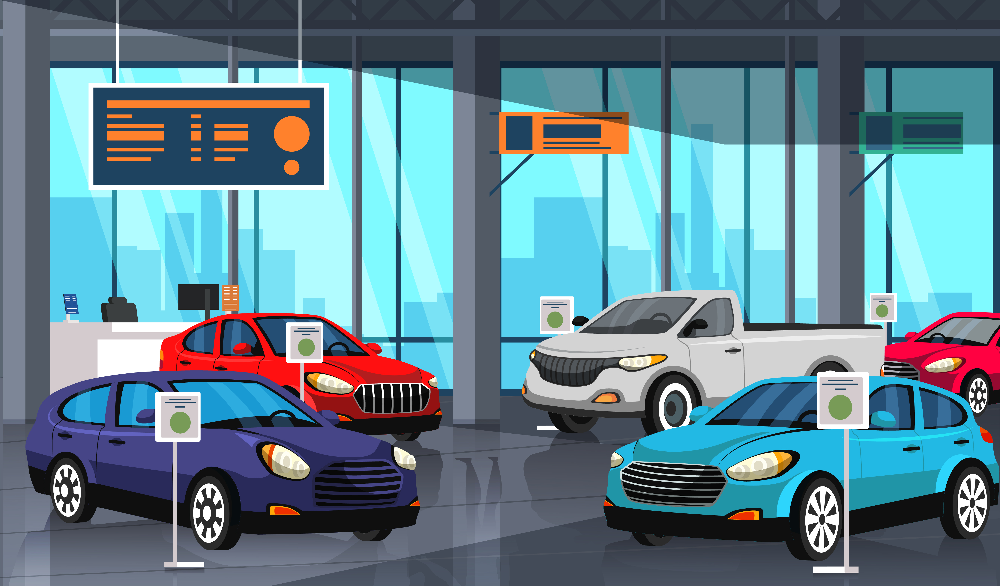

PORTFÓLIO PESSOAL
Sobre
Habilidades
Meus Projetos
Contato
Modo escuro 🌙
Projeto 1
PROJETO 1 - Site Bella Doceria
Feita para a disciplina de projeto integrador, com o objetivo de criar um site próprio para venda de doces.
Projeto 2

PROJETO 2 - Concessionária
Feito com o objetivo de simular uma concessionária de carros usando Java.